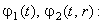

|
3.3. Определение устойчивости разностных схем, аппроксимирующих уравнения математической модели процесса массовой кристаллизации из растворов.
Рассмотрим методику определения устойчивости разностных схем, аппроксимирующих
уравнения математической модели процесса массовой кристаллизации из растворов, с помощью тестовой задачи.
Для простоты рассмотрим только два уравнения модели: уравнение изменения концентрации раствора (15.2) и
уравнение баланса числа частиц (15.4).
Зададим тестовые функции для концентрации раствора, скорости роста
кристаллов и функции распределения кристаллов по размерам в экспоненциальной форме:
Представим уравнения, истинными решениями которых должны быть тестовые функции (15.17), в следующем виде:
Подставляя тестовые функции (15.17) в данные уравнения, определим вид неизвестных функций 
Таким образом, уравнения, истинными решениями которых являются тестовые функции (15.17), имеют вид:
При этом уравнения (15.18) отличаются от уравнений (15.2) и (15.4) только видом свободных членов,
в состав которых не входят искомые функции. Зададим начальные и граничные условия для уравнений (15.18)
с помощью тестовых функций (15.17):
Запишем для уравнений (15.18) разностные схемы, используя при этом принцип замороженных коэффициентов,
выражение (14.4) для аппроксимации интеграла и правило выбора конечной разности для аппроксимации
производной по r:
Решив уравнения (15.18) с помощью разностных схем (15.19), мы сможем провести сравнение полученных численных значений со значениями тестовых функций (15.17):
Если расхождения будут незначительны, то разностные схемы (15.19) можно считать устойчивыми и,
следовательно, разностные схемы (15.9) и (15.10), аппроксимирующие уравнения
(15.2) и (15.4), соответственно, также будут устойчивыми. Отметим, что
выражение для изменения функции
в систему (15.18) не входит, поэтому при решении тестовых разностных схем (15.19) для
можно использовать непосредственно тестовую функцию (15.17).
|